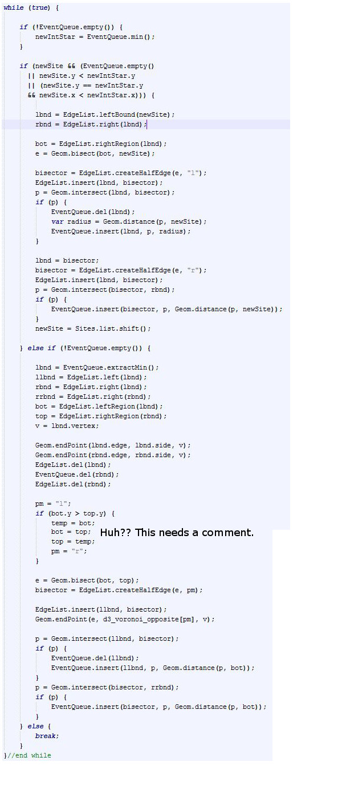

This summer I started the work of implementing a version of Fortune's sweep line algorithm for computing voronoi diagrams. My goal at the time was to completely understand an implementation of the algorithm so I could modify it for purposes of generating voronoi treemaps. The internet did not want me to prevail. And by that I mean all pseudo-code available was lacking in key algorithmic details. Different implementations weren't exactly clear either, that is, I couldn't figure out how actual implementations mapped back to the pseudo-code. There would be random bits of logic and conditional cases that seemed to come out of nowhere without any comments. Steven Fortune (link), in his original paper on the subject, provided working code to his own algorithm in C. Unfortuantely, the code is very puzzling and has many memory leaks. Others have updated the code (link), fixing the leaks, but it is still confusing.
An implementation is provided in d3.js in javascript, but further examination shows it was just a copy of this implementation found here. Where do you think this implementation came from? If you guessed Fortune you are right; it is almost an exact rip of Fortune's original C code, even the variable names are the same in most cases. There are many other implementations out there as well - most relate back to the original source. The purpose of this post is just to make available what I have written hoping my code will help someone.
The algorithm is difficult to wrap your head around at first. Here is a paper about one man's difficulties implementing this algorithm. He states, "This implementation comes at a cost: at least five times as much code, and much more programmer effort" (in comparison to another algorithm).
The diagram below combines the output from my implementation and the implementation in d3.js (a complete implementation). My implementation displays the red dots; they represent the vertices in the voronoi diagram. The d3.js implementation outputs the edges (which encode the vertices). My code is incomplete. The only thing missing from my implementation is keeping track of the edges as the algorithm runs (just a doubly linked list that I haven't implemented). As you can tell, my vertex output is correct because a red dot lies on every vertex in the voronoi diagram.
My main goal was to create simple code that followed the pseudo-code very closely. Below is an image showing pseudo-code on the left and my code on the right.
Hopefully my source code reads closely to the pseudo-code. Note that step 4 in HandleSiteEvent and step 2 in HandleCircleEvent are not implemented. Those steps involve the doubly linked list to record the edges. Yes, some of the logic is hidden away in other calls, but at least it obvious which calls contain which logic. Somebody examining the code will know where to look when trying to find a specific part of the implementation.
In contrast, below is javascript code that represents the same exact logic, though slightly more complicated because of the edge list and no comments. Still, I think my code is more conceptually clear after reading the pseudo-code for the algorithm. Maybe I'm not very bright, but I spent many hours trying to understand the complete version of the code below. It turns out part of the reason it's so unintuitive is because instead of using a binary tree (or some balanced variant), a doubly linked list is used to represent arcs on the beach front. This is contrary to almost all I read, which always states a binary tree is used. If you aren't expecting this it can throw you off quite a bit.
On a side tangent, when representing mathematics in code, it is difficult to tell what is going on. This is because all computation has been precomputed and what would be twenty steps on a sheet of paper turns into a single weird ass expression in the code. Documentation is important here so other people who read your code know what you are computing. Code doesn't always speak for itself.
I'd be happy to answer any questions about the implementation but I'm not going to go over details here. One thing I would like to note is I do not use optimal data structures. The priority queue is just a list and the binary tree doesn't get rebalanced. My purpose was to understand, as better data structures can always be added later.
The source code can be found here and here.
The links below were most useful to me.